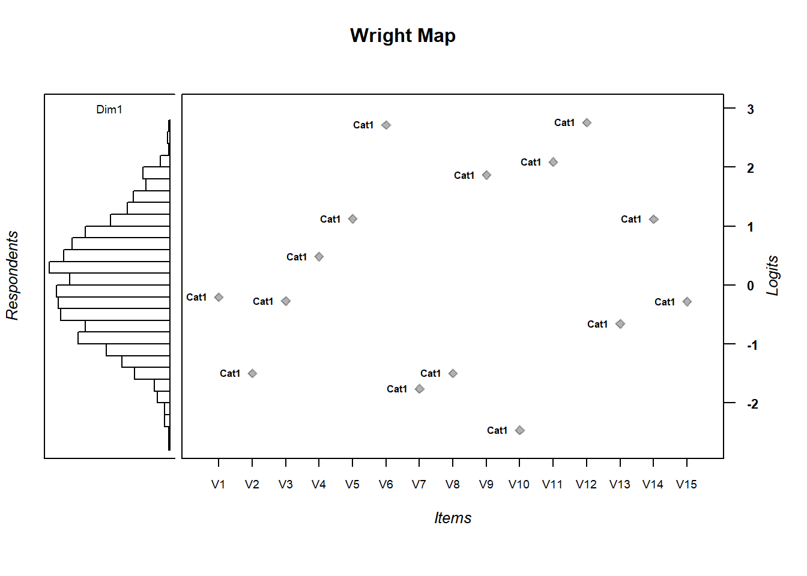

Chapter 5 Person Abilities
Person abilities are also of interest. We can look at the person side of the model by computing person abilities.
- Compute person abilities using the
tam.wlefunction and assign to an object calledabil. - Extract person abilities (\(\theta_p\)) from
abilto create an object in theenvironmentcalledPersonAbilitywhich will essentially be a column vector.
Note: You may want more information than this at times (such as standard errors) so you may not always want to subset this way.
## Iteration in WLE/MLE estimation 1 | Maximal change 1.2824
## Iteration in WLE/MLE estimation 2 | Maximal change 0.2808
## Iteration in WLE/MLE estimation 3 | Maximal change 0.01
## Iteration in WLE/MLE estimation 4 | Maximal change 0.0012
## Iteration in WLE/MLE estimation 5 | Maximal change 1e-04
## Iteration in WLE/MLE estimation 6 | Maximal change 0
## ----
## WLE Reliability= 0.666See the first few rows of Abil. Notice you get:
pid: person id assigned by TAM.N.items: Number of items the person was given (this becomes interesting when you have linked test forms where students may not all see the same number of items)PersonScores: Number of items the student got right or endorsed (in the survey case).PersonMax: Max total that person could have gotten right/selected an option fortheta: estimated person abilityerror: estimated measurement errorWLE.rel: estimated person seperation reliability.
head(Abil)
# or
View(Abil)| pid | N.items | PersonScores | PersonMax | theta | error | WLE.rel |
|---|---|---|---|---|---|---|
| 1 | 16 | 10 | 1015 | -2.468706 | 0.0837156 | 0.9878739 |
| 2 | 16 | 10 | 1015 | -2.468706 | 0.0837156 | 0.9878739 |
| 3 | 16 | 13 | 1015 | -2.450439 | 0.0702358 | 0.9878739 |
| 4 | 16 | 9 | 1015 | -2.562571 | 0.1394911 | 0.9878739 |
| 5 | 16 | 17 | 1015 | -2.436597 | 0.0638603 | 0.9878739 |
| 6 | 16 | 12 | 1015 | -2.454845 | 0.0732704 | 0.9878739 |
The column in the abil data.frame corresponding to person estimates is the theta column. Pull out the ability estimates, theta, column if you would like, though, this creates a list. This makes it a little easier for a few basic tasks below.
## [1] 0.9846072 0.5861029 1.3941069 -0.6435504 2.2922517 -0.2146746You can export those estimated abilites to a .csv to save (you can also save directly in R, if you need to). This writes abil as a csv file to your output directory that we created earlier using the here package.
write.csv(abil, here("output", "HLSmod1_thetas.csv")Descriptives for person ability
## [1] 0.001822466## [1] 1.2051165.1 Wright Map
To visualize the relationship between item difficulty and person ability distributions, call the WrightMap package installed previously. We’ll generate a simple WrightMap. We’ll clean it up a little bit by removing some elements

5.1.1 Exercise:
- Are the items appropriately targeted to the ability level of the population?
- Why do you think?